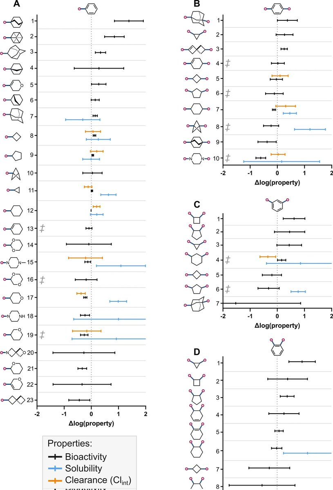

時璃風医詩🍥🌈
@hagishigure
@NuclearThermal 説這個體感不行。
我説NBOMe 2C-B-Fly很好，對抑鬱症來說。
順便再貼一張SAR构效對比圖。

Zemin Jiang
@jzm1919810
之前在tl看到"娱乐兴奋剂"。可是兴奋剂不是干活用的吗？要温和欣快/社交增强，应该更匹配苯乙胺类。pihkal里一堆这样的，shulgin甚至多次直言不讳道想获得erotica效果（）反观tihkal写的很草率，他对灵性探索兴趣寥寥。图中是个骨架，可以模拟著名的2c系列，有兴趣可以买（但是很贵，一剂可能一两百） https://t.co/B5klsDuaqw